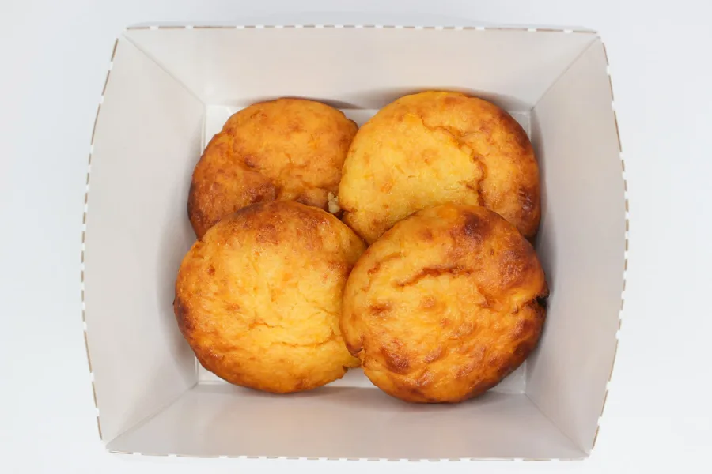
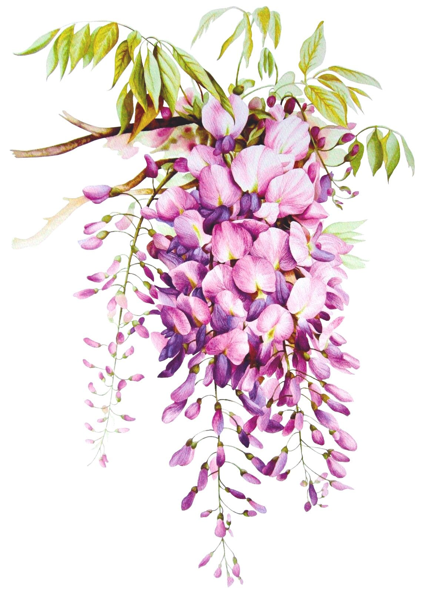
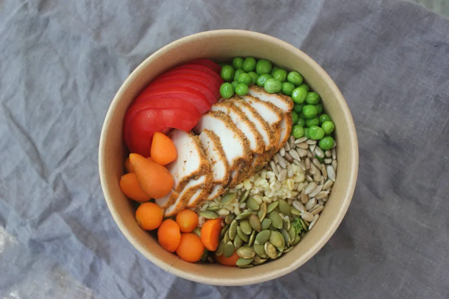
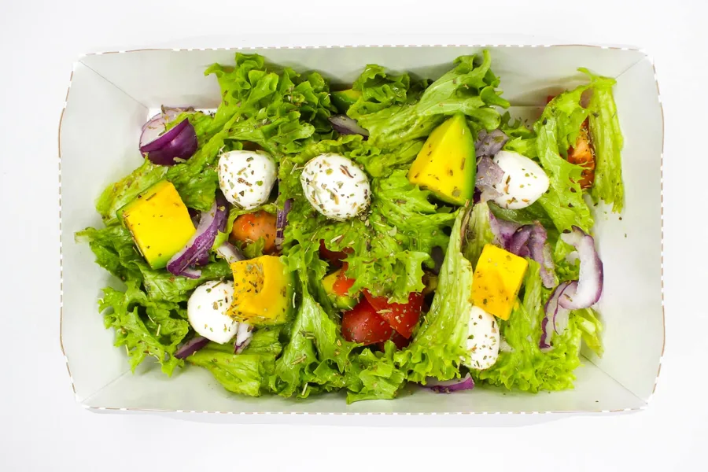
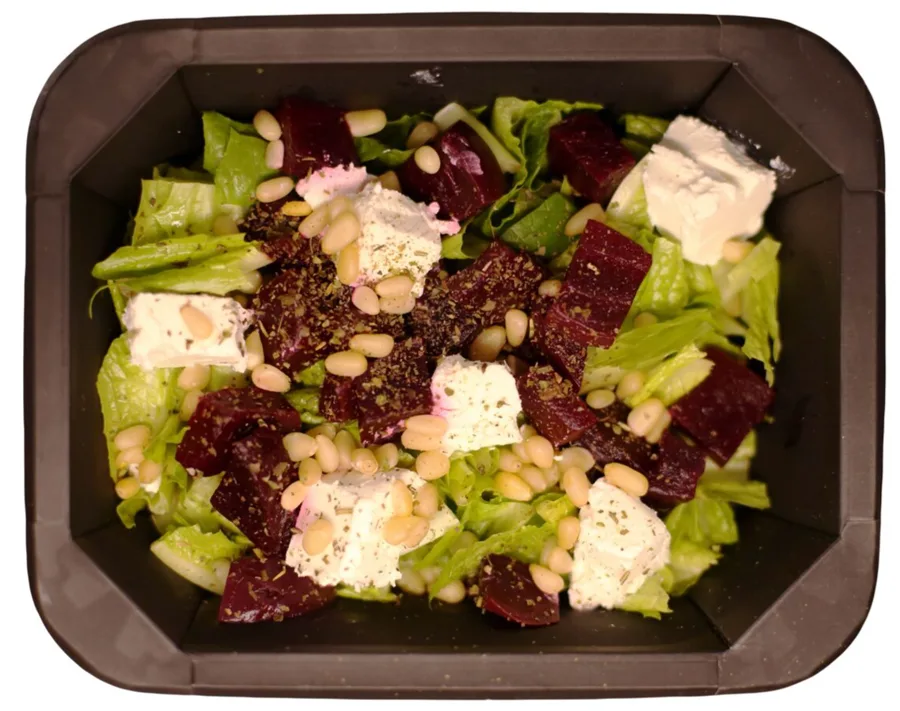
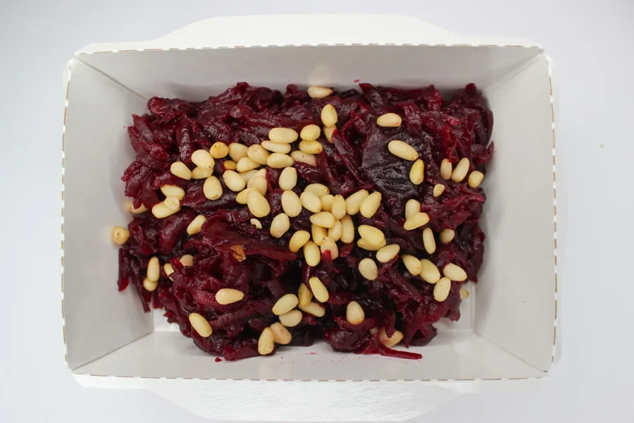

ПодробнееКухня Wisteria
Меню со вкусом.
От первого кофе до любимого десерта. Выбирайте в своём ритме.

Ваш заказ
Бесплатно от 1 200 ₽ Условия зависят от районаСостав и аллергены уточняйте в карточке блюда.
431 позиций в менюО составе и аллергенах

ПодробнееБоул с индейкой
Гарнир и соус на ваш выбор.
Аллергены уточните у кафе
Данные требуют уточнения
от 410 ₽Выбрать

ПодробнееСалат с авокадо и бэби моцареллой
Ромэн, авокадо, томаты и бэби моцарелла.
По составу: Молоко
450 ₽Выбрать
 Подробнее
Подробнее 
ПодробнееСалат со свёклой и сыром фета
салат Ромэн, свекла, сыр фета, кедровый орех
По составу: Молоко, Орехи
Данные требуют уточнения
от 250 ₽Выбрать

ПодробнееПо вашему запросу ничего не найдено. Попробуйте другое название.
Цена и наличие подтверждаются кафе при заказе